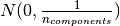
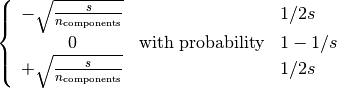
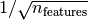
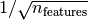

6.4. Random Projection¶
The sklearn.random_projection module implements a simple and computationally efficient way to reduce the dimensionality of the data by trading a controlled amount of accuracy (as additional variance) for faster processing times and smaller model sizes. This module implements two types of unstructured random matrix: Gaussian random matrix and sparse random matrix.
The dimensions and distribution of random projections matrices are controlled so as to preserve the pairwise distances between any two samples of the dataset. Thus random projection is a suitable approximation technique for distance based method.
References:
- Sanjoy Dasgupta. 2000. Experiments with random projection. In Proceedings of the Sixteenth conference on Uncertainty in artificial intelligence (UAI‘00), Craig Boutilier and Moisés Goldszmidt (Eds.). Morgan Kaufmann Publishers Inc., San Francisco, CA, USA, 143-151.
- Ella Bingham and Heikki Mannila. 2001. Random projection in dimensionality reduction: applications to image and text data. In Proceedings of the seventh ACM SIGKDD international conference on Knowledge discovery and data mining (KDD ‘01). ACM, New York, NY, USA, 245-250.
6.4.1. The Johnson-Lindenstrauss lemma¶
The main theoretical result behind the efficiency of random projection is the Johnson-Lindenstrauss lemma (quoting Wikipedia):
In mathematics, the Johnson-Lindenstrauss lemma is a result concerning low-distortion embeddings of points from high-dimensional into low-dimensional Euclidean space. The lemma states that a small set of points in a high-dimensional space can be embedded into a space of much lower dimension in such a way that distances between the points are nearly preserved. The map used for the embedding is at least Lipschitz, and can even be taken to be an orthogonal projection.
Knowing only the number of samples, the sklearn.random_projection.johnson_lindenstrauss_min_dim estimates conservatively the minimal size of the random subspace to guarantee a bounded distortion introduced by the random projection:
>>> from sklearn.random_projection import johnson_lindenstrauss_min_dim
>>> johnson_lindenstrauss_min_dim(n_samples=1e6, eps=0.5)
663
>>> johnson_lindenstrauss_min_dim(n_samples=1e6, eps=[0.5, 0.1, 0.01])
array([ 663, 11841, 1112658])
>>> johnson_lindenstrauss_min_dim(n_samples=[1e4, 1e5, 1e6], eps=0.1)
array([ 7894, 9868, 11841])
Example:
- See The Johnson-Lindenstrauss bound for embedding with random projections for a theoretical explication on the Johnson-Lindenstrauss lemma and an empirical validation using sparse random matrices.
References:
- Sanjoy Dasgupta and Anupam Gupta, 1999. An elementary proof of the Johnson-Lindenstrauss Lemma.
6.4.2. Gaussian random projection¶
The sklearn.random_projection.GaussianRandomProjection reduces the dimensionality by projecting the original input space on a randomly generated matrix where components are drawn from the following distribution .
Here a small excerpt which illustrates how to use the Gaussian random projection transformer:
>>> import numpy as np
>>> from sklearn import random_projection
>>> X = np.random.rand(100, 10000)
>>> transformer = random_projection.GaussianRandomProjection()
>>> X_new = transformer.fit_transform(X)
>>> X_new.shape
(100, 3947)
6.4.3. Sparse random projection¶
The sklearn.random_projection.SparseRandomProjection reduces the dimensionality by projecting the original input space using a sparse random matrix.
Sparse random matrices are an alternative to dense Gaussian random projection matrix that guarantees similar embedding quality while being much more memory efficient and allowing faster computation of the projected data.
If we note s = 1 / density, the elements of the random matrix are drawn from

where  is the size of the projected subspace.
By default the density of non zero elements is set to the minimum density as
recommended by Ping Li et al.: .
is the size of the projected subspace.
By default the density of non zero elements is set to the minimum density as
recommended by Ping Li et al.: .
Here a small excerpt which illustrates how to use the sparse random projection transformer:
>>> import numpy as np
>>> from sklearn import random_projection
>>> X = np.random.rand(100,10000)
>>> transformer = random_projection.SparseRandomProjection()
>>> X_new = transformer.fit_transform(X)
>>> X_new.shape
(100, 3947)
References:
- D. Achlioptas. 2003. Database-friendly random projections: Johnson-Lindenstrauss with binary coins. Journal of Computer and System Sciences 66 (2003) 671–687
- Ping Li, Trevor J. Hastie, and Kenneth W. Church. 2006. Very sparse random projections. In Proceedings of the 12th ACM SIGKDD international conference on Knowledge discovery and data mining (KDD ‘06). ACM, New York, NY, USA, 287-296.